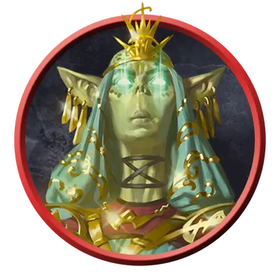

Гитцерай псион
Githzerai Psion
Средняя Аберрация (Гит), Принципиальная Нейтральная

Класс Защиты 18 Инициатива +8 (18)
Хиты 169 (26к8 + 52)
Скорость 40 футов, Полёта 40 футов (парит)
| мод | спас | ||
|---|---|---|---|
| СИЛ | 12 | +1 | +5 |
| ЛОВ | 18 | +4 | +8 |
| ТЕЛ | 15 | +2 | +2 |
| мод | спас | ||
|---|---|---|---|
| ИНТ | 19 | +4 | +8 |
| МДР | 18 | +4 | +8 |
| ХАР | 14 | +2 | +2 |
Чувства пассивное Восприятие 18
Языки Общий, Гитский
Опасность 12 (8 400 опыта; БВ +4)
Действия
Мультиатака. Гитцераи совершает три атаки Психическим искажением.
Психическое искажение. Бросок рукопашной или дальнобойной атаки: +8, досягаемость 5 фт. или дистанция 120 фт. Попадание: 26 (4к10 + 4) Психического урона, и цель на выбор гитцерая (А) Очарована до начала следующего хода гитцерая или (Б) Опрокинута, если цель — существо Большого размера или меньше.
Сотворение заклинаний. Гитцераи сотворяет одно из следующих заклинаний (заклинательная характеристика — Интеллект, Сл спасброска заклинаний 16):
Неограниченно: Волшебная рука, Невидима
1/день каждое: Видение невидимого, Планарный переход
Реакции
Псионическая защита. Гитцерай сотворяет Падение пёрышком или Щит в ответ на условие этого заклинания, не нуждаясь в компонентах (заклинательная характеристика — та же, что для Сотворения заклинаний).
Бонус мастерства +4
Среда обитания Лимбо
Сокровища Личные, Магические
Гитцераи
Исследователи пределов реальности
Гитцераи — худощавые человекоподобные существа, физически идентичные гитьянки. У них общая история — когда-то они были единым народом, который физически и ментально изменили свежеватели разума.
Гитцераи считают, что вся их раса, их тела и разумы до сих пор подвержены влиянию бывших угнетателей. И вместо того, чтобы поддаться этому влиянию, они следуют учению своего первого лидера Зертимона — преображают свои тела и разумы в поисках гармонии.
С помощью своих псионических способностей гитцераи создают тихие и скрытые убежища в хаотичных областях мультивселенной. Большинство этих оплотов дрейфуют в хаосе Лимба, однако закрытые поселения этого народа можно обнаружить в Бездне, Стихийном Хаосе и Стране Фей. Гитцераи создают свои обители, чтобы оттачивать псионические способности, получать озарения о мультивселенной и скрываться от гитьянки и свежевателей разума.
Эти могущественные псионики присматривают за убежищами гитцераи, изучают загадочные планарные явления и руководят рраккма — агрессивными вылазками в колонии свежевателей разума для уничтожения иллитидов и раскрытия секретов о том, как были превращены древние гиты.
Приключения с гитами
Персонажи могут быть втянуты в противостояние гитьянки или гитцераи множеством различных способов. Совершите бросок по таблице «Противостояние гитов» для вдохновения или выберите сами завязку приключения с участием этих давно соперничающих народов.
Противостояние гитов
| 1к8 | Персонажи должны… |
| 1 | Доставить сообщение или таинственную посылку королеве-личу Влаакит или от неё. |
| 2 | Найти неуловимого лидера гитов для замаскированного пожирателя интеллекта. |
| 3 | Помочь гитцераи, которые бегут от разрушивших их обитель гитьянки. |
| 4 | Возобновить или разорвать союз гитьянки с красными драконами. |
| 5 | Участвовать в охоте на иллитидов вместе с гитьянки. |
| 6 | Раскрыть гита-шпиона в планарном поселении или на магическом корабле. |
| 7 | Отправиться на поиски последнего известного местонахождения легендарных Гит или Зертимона. |
| 8 | Вернуть клинок павшего гитьянки-рыцаря его народу. |